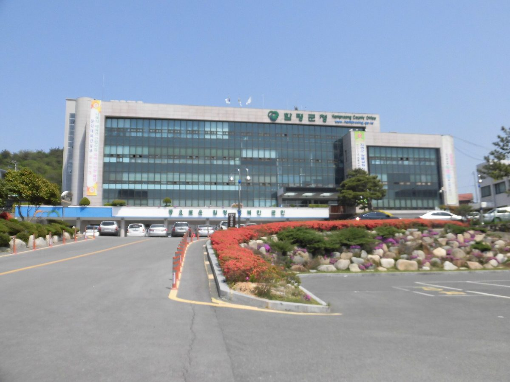

함평군 사회단체협의회, 8GW 재생에너지 특구 지정 요구 서명운동…11월 12일까지 군민 90% 목표

오민수 협의회장, 특별법 제정·주민주도형 분산에너지 특화지역·RE100 국가산단 유치·이익공유 법적 보장 등 4가지 요구…특구·변전소·산단은 정해진 것 없는 민간 구상
전남 함평군 사회단체협의회가 함평을 8GW급 재생에너지 생산 특구로 지정해 달라는 범군민 서명운동에 나선다. 협의회는 21일 임시회의를 열어 '함평군 재생에너지 8GW 전력생산 특구 지정 범군민 추진위원회'의 구성과 공동대표 참여 방안을 논의했으며, 추진위는 11월 12일까지 군민 90% 이상의 서명을 받아 전남광주특별시와 정부, 국회에 전달할 계획이다. 오민수 협의회장이 내놓은 구상은 태양광·풍력에 수소·메탄가스 발전, 에너지저장장치(ESS), 양수발전을 국가 전력망과 묶어 함평 전역을 생산·저장·조정 거점으로 만들고, 345kV 변전소와 RE100 국가산업단지·첨단기업을 유치하는 것이다. 오 회장은 정부와 국회에 특별법 제정, 8GW 생산기지와 주민주도형 분산에너지 특화지역 지정, RE100 국가산단 유치, 주민의 사업 참여와 이익공유의 법적 보장을 요구했고, 발전 수익을 '햇빛연금'으로 돌려 군민 소득과 지역 자산으로 쌓자고 주장했다. 그는 "기업만 돈을 벌고 군민은 소외되는 개발은 결코 우리가 바라는 미래가 아니다"라며 토지주에게는 정당한 소득을, 주민에게는 사업 참여 기회를 보장해야 한다고 말했다. 다만 특구 지정과 국가산단 유치, 변전소 확보는 아직 정해진 것이 없는 민간단체의 구상으로, 실제 추진에는 발전원별 입지와 설비 규모의 근거, 사업비, 계통 연계 여력, 주민 수용성 검증이 뒤따라야 한다.
시민에너지 관점
군민 90% 서명을 목표로 한 이번 운동에서 눈여겨볼 대목은 8GW라는 규모보다 '기업만 돈 버는 개발은 안 된다'는 요구가 맨 앞에 섰다는 점이다. 대규모 특구가 외부 자본의 땅 확보와 송전망 갈등만 키울 수 있다는 우려도 나올 수 있지만, 덴마크 미델그룬덴처럼 시민협동조합이 해상풍력 지분 절반을 가진 사례는 사업이 커도 주민이 주인이 될 수 있음을 보여 준다. 햇빛연금이 해마다 받는 배당에 그치지 않고 지역 자산이 되려면 주민이 처음부터 지분을 가진 주주로 참여해야 한다. 특별법을 논의한다면 주민 지분의 최소 비율과 참여 방식부터 법안에 적어 넣어야 한다.
출처: 서울경제TV 2026-10-22 오중일 원문 보기
咸平郡社会団体協議会、8GW再生可能エネルギー特区の指定を求める署名運動…11月12日までに郡民90%が目標
オ・ミンス協議会長、特別法の制定・住民主導型分散エネルギー特化地域・RE100国家産業団地の誘致・利益共有の法的保障など4項目を要求…特区・変電所・産業団地は何も決まっていない民間の構想
全羅南道咸平（ハムピョン）郡の社会団体協議会が、咸平を8GW級の再生可能エネルギー生産特区に指定するよう求める郡民挙げての署名運動に乗り出す。協議会は21日に臨時会議を開き、「咸平郡再生可能エネルギー8GW電力生産特区指定汎郡民推進委員会」の構成と共同代表の参加方法を話し合った。推進委は11月12日までに郡民の90%以上の署名を集め、全南光州特別市と政府、国会に届ける計画だ。オ・ミンス協議会長が示した構想は、太陽光・風力に水素・メタンガス発電、エネルギー貯蔵装置（ESS）、揚水発電を国の電力網と結び、咸平全域を生産・貯蔵・調整の拠点にするとともに、345kVの変電所とRE100国家産業団地・先端企業を誘致するというものだ。オ会長は政府と国会に対し、特別法の制定、8GW生産基地と住民主導型分散エネルギー特化地域の指定、RE100国家産業団地の誘致、住民の事業参加と利益共有の法的保障を求め、発電収益を「太陽光年金」として郡民の所得と地域の資産に積み上げようと訴えた。オ会長は「企業だけがもうかり郡民が取り残される開発は、決して私たちが望む未来ではない」と述べ、土地所有者には正当な所得を、住民には事業参加の機会を保障すべきだとした。ただし特区指定や国家産業団地の誘致、変電所の確保はまだ何も決まっていない民間団体の構想であり、実際に進めるには電源ごとの立地と設備規模の根拠、事業費、系統連系の余力、住民の受容性の検証が欠かせない。
市民エネルギーの視点
郡民90%の署名を目指す今回の運動で注目すべきは、8GWという規模よりも「企業だけがもうかる開発はだめだ」という要求が先頭に立った点だ。大規模な特区が外部資本による土地確保や送電網をめぐる対立ばかりを大きくしかねないとの懸念も出るだろうが、デンマークのミデルグルンデンのように市民協同組合が洋上風力の持ち分の半分を持つ例は、事業が大きくても住民が持ち主になれることを示している。太陽光年金が毎年受け取る配当にとどまらず地域の資産となるには、住民が最初から持ち分を持つ株主として参加しなければならない。特別法を議論するなら、住民持ち分の最低比率と参加方式からまず法案に書き込むべきだ。
出典: Seoul Economic TV 2026-10-22 Oh Jung-il 原文を読む
咸平郡社会团体协议会发起签名运动，要求指定8GW可再生能源特区…目标在11月12日前征集90%郡民签名
协议会会长Oh Min-su提出制定特别法、指定居民主导型分布式能源特色区域、引进RE100国家产业园区、以法律保障利益共享等4项要求…特区、变电站和产业园区均未确定，仍是民间构想
韩国全罗南道咸平郡社会团体协议会将发起全郡签名运动，要求把咸平指定为8GW级可再生能源生产特区。协议会21日召开临时会议，讨论了"咸平郡可再生能源8GW电力生产特区指定全郡民推进委员会"的组建和共同代表的参与方式；推进委员会计划在11月12日前征集90%以上郡民的签名，提交给全南光州特别市、中央政府和国会。协议会会长Oh Min-su提出的构想是，把太阳能、风能与氢能和甲烷发电、储能系统（ESS）、抽水蓄能同国家电网连接起来，使咸平全境成为发电、储能和调节的基地，同时引进345kV变电站以及RE100国家产业园区和高科技企业。Oh会长向政府和国会提出了制定特别法、指定8GW生产基地和居民主导型分布式能源特色区域、引进RE100国家产业园区、以法律保障居民参与项目和共享利益等要求，并主张把发电收益以"阳光年金"的形式转化为郡民收入和地方资产。他表示，"只让企业赚钱、把郡民排除在外的开发，绝不是我们想要的未来"，应当保障土地所有者获得正当收入、居民获得参与项目的机会。不过，特区指定、国家产业园区引进和变电站落地都还没有任何定论，只是民间团体的构想；真正推进还需要论证各类电源的选址和装机规模依据、项目费用、电网接入余量以及居民接受度。
市民能源视角
这场以90%郡民签名为目标的运动，值得关注的不是8GW的规模，而是"不能搞只让企业赚钱的开发"这一诉求被放在了最前面。有人可能担心，大型特区只会加剧外部资本圈地和输电网矛盾；但丹麦Middelgrunden由市民合作社持有海上风电一半股份的先例表明，项目再大，居民也可以成为主人。阳光年金要想不止是每年领取的分红，而是变成地方资产，居民就必须从一开始作为持股股东参与。如果要讨论特别法，首先应把居民持股的最低比例和参与方式写进法案。
来源: Seoul Economic TV 2026-10-22 Oh Jung-il 查看原文
Hampyeong civic groups' council launches petition for an 8GW renewable energy special zone, aiming for 90% of residents by November 12
Council chair Oh Min-su makes four demands including a special act, a resident-led distributed energy zone, an RE100 national industrial complex and legal guarantees for benefit-sharing; the zone, substation and complex remain an undecided civic proposal
The council of civic groups in Hampyeong County, South Jeolla, is launching a county-wide petition asking that Hampyeong be designated an 8GW renewable energy production zone. At an extraordinary meeting on the 21st, the council discussed forming a "county-wide committee for designating Hampyeong as an 8GW renewable power production zone" and how co-representatives would take part; the committee plans to collect signatures from more than 90% of residents by November 12 and deliver them to the Jeonnam-Gwangju Special City, the national government and the National Assembly. The plan put forward by council chair Oh Min-su would tie solar and wind power together with hydrogen and methane gas generation, energy storage systems (ESS) and pumped hydro on the national grid, turning all of Hampyeong into a hub for generation, storage and balancing, and would bring in a 345kV substation, an RE100 national industrial complex and high-tech firms. Oh asked the government and the National Assembly for a special act, designation of the 8GW production base and a resident-led distributed energy zone, an RE100 national industrial complex, and legal guarantees for residents' participation and benefit-sharing, and argued that generation profits should become residents' income and local assets through a "sunlight pension." "Development where only companies make money and residents are left out is not the future we want," he said, adding that landowners should receive fair income and residents a chance to take part. However, the zone, the industrial complex and the substation are not settled in any way and remain a civic group's proposal; carrying it out would require verifying sites and capacity for each energy source, project costs, grid connection headroom and local acceptance.
Citizen Energy View
What stands out in a campaign aiming for 90% of residents is not the 8GW figure but that the demand "no development where only companies profit" comes first. Some may worry that a huge zone would only fuel land grabs by outside capital and fights over transmission lines, but Denmark's Middelgrunden, where a citizens' cooperative owns half of an offshore wind farm, shows that residents can be owners even of large projects. For a sunlight pension to become a local asset rather than just a yearly payout, residents must join as equity shareholders from the start. If a special act is debated, the minimum share of resident ownership and how residents can invest should be the first things written into it.
Source: Seoul Economic TV 2026-10-22 Oh Jung-il Read the original